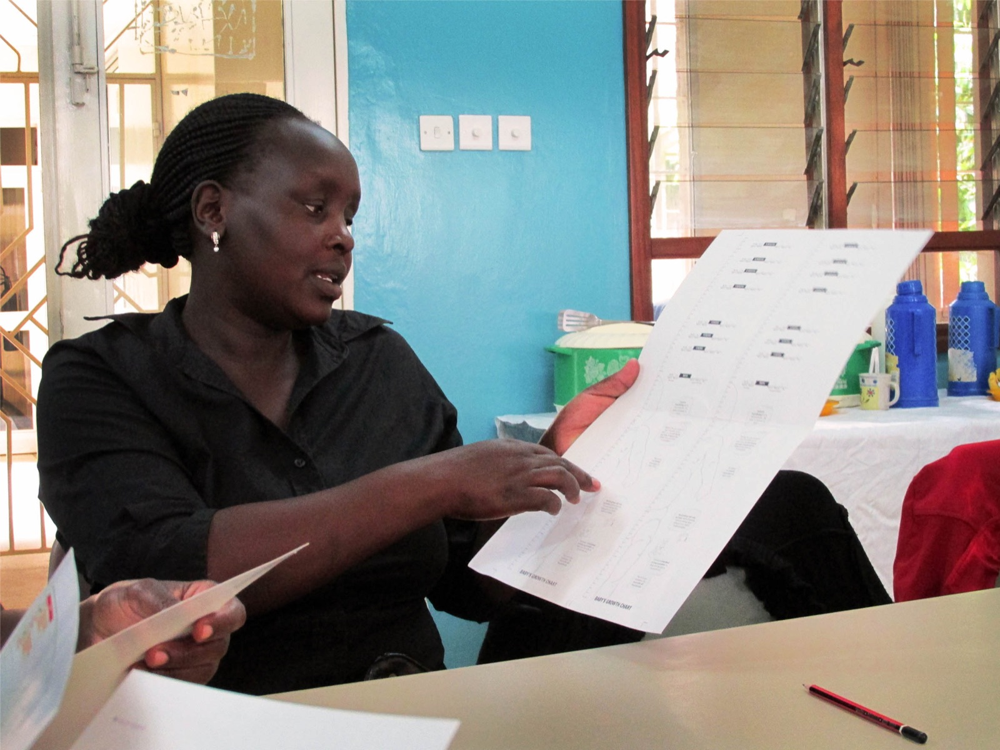

Mixed-methods UX researcher · Products & services · PhD, HCI
Simran Chopra — UX Researcher
I help teams understand how people make, share and decide together, and turn that into product direction. I have 9+ years of end-to-end research behind me: Samsung's first Tizen phone and Bixby, an at-home health device, global fieldwork for the Gates Foundation, and UKRI-funded work with DEFRA and Arup. I specialise in ethical, trauma-informed research with people that standard methods tend to miss.
- 9+years of applied research
- 6+launched products
- 12+user-centred innovations
- 20+peer-reviewed publications
Worked with & recognised by: Samsung R&D · Bill & Melinda Gates Foundation · Inito · UKRI (£1.6M grant) · DEFRA · Arup · ACM DIS Associate Chair · TEI Best Paper · Samsung Outstanding Project of the Year
Selected case studies
Each one covers the question, my role, the methods, who I influenced and what changed.
Bixby
Samsung R&D Institute · Senior UX Researcher · 2014–17
Shaping Samsung's first Tizen phone and Bixby for South Asian users
Foundational and evaluative research in agile sprints for a phone that shipped in India, Bangladesh and Sri Lanka and was named Samsung's Outstanding Project of the Year.
- Generative + Evaluative
- Usability testing
- Diary studies
- Intercept surveys
Fertility Monitor
Inito Health · Design Research Consultant · 2014–17
Redesigning onboarding for an at-home fertility monitor to 89% task completion
In-home usability research and mixed-methods evaluation on a health diagnostics device before its production launch.
- Evaluative
- In-home usability testing
- Mixed-methods evaluation

Centre for Knowledge Societies × Gates Foundation & WHO · 2013–14
Redesigning child immunisation records across three countries
Led a 7+ person team through fieldwork in India, Kenya and Indonesia. The recommendations went to WHO, UNICEF, GAVI and the Gates Foundation.
- Generative + Evaluative
- Ethnography
- Concept testing
- Research ops
0 → 1
CookUp Inc. · Co-founder & research lead · 2020–23
Building the research engine for a platform that turns indie chefs into micro-entrepreneurs
Set up end-to-end research infrastructure and unmoderated feedback loops that steered features from concept to Beta.
- Generative + Evaluative
- Unmoderated studies
- Interviews
- Creators
Peoplehood
University of Edinburgh · Postdoctoral researcher · 2022–24
Designing a research instrument to study collective decision-making
A board game, used as a research tool with socially isolated communities across Scotland, that produced evidence about governance and value exchange.
- Generative
- Co-design sessions
- Inclusive methods
- Workshops
DEFRA · Arup · UKRI
City St George's & UAL · Postdoctoral researcher · 2024–present
Aligning government, industry and community partners on smart-city services
Leading research that feeds service-design and policy decisions on a £1.6M UKRI project, anchored in an in-situ field site.
- Generative
- Stakeholder research
- Co-design sessions
- In-situ deployment
C&C 2025
Postdoctoral research · C&C 2025 TODO: confirm
Turning sensor data into stories people act on, with LLM-generated narratives
Generative research on how people read, trust and respond to AI-written narratives drawn from live soil data.
- Generative
- In-situ deployment
- Interviews
- AI / LLM
What I bring
9+ years, 6+ launched products
Industry UXR at Samsung and Inito, a 0→1 startup, global-health fieldwork, then a PhD and two postdocs in HCI.
The full methods range
Contextual inquiry, interviews, diary studies, usability testing, surveys, A/B and unmoderated studies, and co-design sessions.
Generative and evaluative work
From open-ended framing (Exchangeopoly) to pre-launch evaluation (Inito, Samsung).
Influencing senior stakeholders
I've presented to Samsung leadership in India, Korea and the US, and briefed WHO, UNICEF and the Gates Foundation.
Owning direction and ops
I've led a 7+ person team across three countries and run recruitment, screeners and agencies, and I mentor junior designers and PhD students.
Ethical, trauma-informed practice
I've designed safety, consent and data-handling protocols for research with vulnerable and marginalised participants.